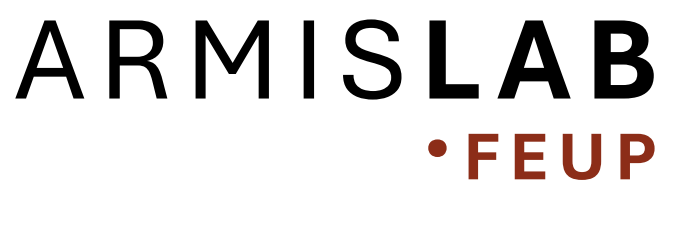

Git & GitHub
Uma forma clara de guardar mudanças, trabalhar em conjunto e partilhar projetos.
Qual é a versão certa?
Um ficheiro muda. Duas pessoas editam. De repente, o nome do ficheiro é a única memória do trabalho.
Num relatório, num script ou num protocolo, precisamos de saber o que mudou, quando e porquê.
O Git nasceu de um problema de colaboração.
Em 2005, o desenvolvimento do Linux precisava de uma forma rápida e fiável de acompanhar muitas alterações feitas por muitas pessoas.
Git é a história do projeto.
Cada commit é um ponto guardado nessa história: alterações escolhidas, com uma mensagem que explica o passo.
Assim podemos perceber como chegámos à versão atual.
Git no computador. GitHub na web.
Git
Regista e organiza versões do projeto.
GitHub
Publica repositórios e facilita colaboração.
Podes usar Git sem GitHub. Hoje vamos usar os dois.
Um repositório é a pasta do projeto com história.
Lá dentro vivem os ficheiros e o registo das alterações guardadas com Git.
No workshop, vais copiar um repositório e editar o teu README: a página de entrada que explica o projeto.
O ciclo que vamos praticar
Alteras um ficheiro, escolhes o que guardar, registas esse passo e envias a tua história para o GitHub.
O Git não guarda todas as alterações automaticamente. Tu decides quando criar cada commit.
git status
Pergunta ao Git: “O que está diferente agora?”
É o comando para te orientares. Podes usá-lo antes e depois de cada passo.
$ git status
Changes not staged for commit:
modified: exercicio/README.md
O README foi alterado, mas ainda não foi escolhido para o próximo commit.
git add
Escolhe que alterações entram no próximo commit.
Hoje vamos escolher apenas o README que cada pessoa editou.
git add
exercicio/README.md→git commit
Guarda as alterações escolhidas como um passo na história.
A mensagem ajuda outras pessoas — e o teu “eu” do futuro — a perceber o que fizeste.
Primeiro, trazemos o projeto para ti.
Fork cria uma cópia na tua conta do GitHub. Clone traz essa cópia para o teu computador.
Assim cada pessoa pode experimentar sem alterar o repositório original.
git push
Envia os teus commits locais para a tua cópia no GitHub.
Depois, abre o repositório no navegador e confirma que o novo commit aparece no histórico.
git push→Uma branch é outro caminho de trabalho.
Permite experimentar uma ideia sem mexer logo na linha principal do projeto.
Hoje basta reconhecer a ideia. O exercício fica na branch principal, normalmente chamada main.
Isto já faz parte da Bioinformática.
Abre um repositório e repara no README, nos ficheiros e no histórico de commits.
Os exemplos são ligações reais. O conteúdo e os números dos repositórios podem mudar.
Agora és tu.
Cria a tua cópia, muda o README e publica o teu primeiro commit.